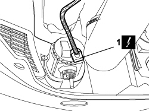
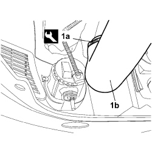
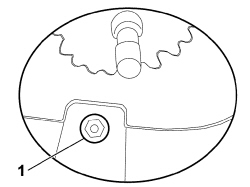
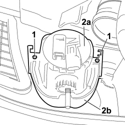

5540D10 L/H OR R/H FOG LIGHT (ONE) - R+R
- Path
- Procedures > 55 ELECTRICAL EQUIPMENT > 5540 EXTERIOR LIGHTING > 5540D FOG LIGHTS > 5540D10 L/H OR R/H FOG LIGHT (ONE) - R+R
- Kind
- repair procedure (removal / refitting; the operation number is the code)
- Applies to
- all engines; all production periods
- Interactive page
- https://sloeber94.github.io/elrnDB-fCrm/en/#/194000756
Applies to: all engines; all production periods
 Removing
Removing
 Refitting
Refitting- Turn the ignition key to the OFF position.
- Disconnect the negative battery terminal.
Description | Connector | |
|---|---|---|
BATTERY |
1. Using the special tool, release the four retaining buttons for the front part of the protection under the engine from the bodyshell.
Tool | Description | Function | Validity |
|---|---|---|---|
1881138000 | Caliper | Band opening |
2. Undo the four bolts (2a) securing the front protection under the engine (2b) to the bumper trim.
- Remove the front protection under the engine from the vehicle.

Applies to: all engines; all production periods
1. Disconnect the electrical connection from the fog light.
Description | Connector | |
|---|---|---|
1 | LEFT FOG LIGHT |
Description | Connector | |
|---|---|---|
1 | RIGHT FOG LIGHT |

Applies to: all engines; all production periods
For versions which have it:
1. On the left side of the vehicle, using the special tool, remove the band (1a) and disconnect the end of the flexible pipe for the intercooler (1b).
- Move the flexible pipe slightly to give free access to the bolt fixing the fog light.

Applies to: all engines; all production periods
For all versions:
1. Working through the opening in the lower part of the bumper, undo the lower bolt fixing the fog light.

Applies to: all engines; all production periods
1. Working on the inside of the bumper, undo the two bolts fixing the fog light.
2. Remove the fog light (2a) from its housing (2b).

Applies to: all engines; all production periods
Refitting
Removing- Check the condition of the fog light.
- Place the fog light in its housing.
- Working on the inside of the bumper, tighten the two upper bolts fixing the fog light.
- Working in the lower part of the bumper, through the opening in it, tighten the lower bolt fixing the fog light.
For versions which have it:
- On the left side of the vehicle: connect the end of the flexible pipe for the intercooler to the rigid pipe and tighten the band to ensure the fastening.
For all other versions:
- Connect the electrical connection to the fog light.
Description | Connector | |
|---|---|---|
LEFT FOG LIGHT |
Description | Connector | |
|---|---|---|
RIGHT FOG LIGHT |
- Place the front protection under the engine in position.
- Tighten the four bolts fixing the front protection under the engine to the bumper trim.
- Fit the four retaining buttons for the front part of the protection under the engine to the bodyshell.
- Connect the negative battery terminal.
Description | Connector | |
|---|---|---|
BATTERY |